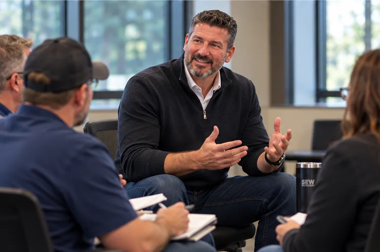

Consulting for manufacturing and industrial organizations
Your people know more than your systems do. I help organizations turn experience into capability: clearer qualification, stronger leadership, better knowledge transfer, useful training systems, and practical AI that supports the work instead of distracting from it.
- Nearly 30 years
- Manufacturing, training, and workforce development experience.
- Furman University
- Strategic AI Advisory Panel Member, Center for Innovative Leadership.
- MPMA
- Board of Directors, Motion + Power Manufacturers Alliance.
- Published author
- Leadership books and practical writing used to extend the conversation.
A good fit when the problem is easy to feel but hard to put on a spreadsheet.
- Critical knowledge lives in a few experienced people.
- Training depends on who happens to be available.
- Employees cannot see what progression really requires.
- Supervisors were promoted for technical ability and left to figure out leadership.
- AI is entering the workplace, but useful boundaries and use cases are still unclear.

Build the system around the work.
I do not start with a training catalog. I start by finding out what people actually do, what good performance requires, and where the current system breaks down.
Workforce qualification and career pathways
Build observable qualification standards for roles, levels, and progression so employees and managers understand what capability actually looks like.
- Role and task analysis
- Level I, II, Senior, Lead, or role specific progression
- Assessment criteria and evaluator guidance
- Development plans tied to the next level
- Skills matrices and heat map thinking that reflects real work
Training systems and knowledge transfer
Capture what experienced employees know before it walks out the door and turn it into training other people can actually use.
- Subject matter expert interviews
- OJT and onboarding structure
- Trainer development
- Technical curriculum and job aids
- Qualification tied to demonstrated performance
Frontline leadership systems
Develop supervisors and managers around the conversations, decisions, and accountability they face in ordinary work.
- New supervisor development
- Leadership pathways
- Manager reinforcement and follow up
- Realistic scenario practice
- Speaking and facilitated leadership sessions
Practical AI for manufacturing
Find where AI can reduce friction, capture expertise, improve communication, or speed up knowledge work without pretending every problem needs an AI solution.
- AI readiness and workflow reviews
- Role-specific use cases
- Leader and employee workshops
- Responsible use conversations
- Pilot ideas that can be tested before they are scaled
Start with one problem worth solving.
Every engagement can be scoped around the organization in front of me. These are common entry points, not rigid packages.
Capability review
Find where the workforce system is breaking down.
Interviews, document review, observation, and a practical assessment of training, qualification, progression, knowledge risk, and leadership development.
Qualification build
Define what good looks like for a role or department.
Turn job knowledge and performance expectations into a usable qualification and development system.
Knowledge capture
Get critical knowledge out of one person’s head.
Structure expert knowledge so it can be taught, practiced, evaluated, and handed to the next person without losing the judgment behind it.
AI working session
Find the useful AI work before buying more technology.
Bring together leaders and people close to the work to identify friction, evaluate use cases, and decide what is worth testing.
AI is a tool. Judgment is still the job.
The strongest AI use cases usually come from people who understand the workflow well enough to know where time is being wasted, where information gets lost, and where a faster answer is not necessarily a better answer.
My AI work sits on top of decades spent in manufacturing, training, leadership development, and workforce systems. That keeps the conversation focused on work people recognize rather than technology for its own sake.
Strategic AI Advisory Panel Member
Furman University Center for Innovative Leadership. Areas of expertise listed by the program include using AI for creative innovation, concerns and risks around AI, and driving AI transformation and adoption.
Do not begin with the binder.
Begin with the people who know the work. Watch what happens. Ask where the real decisions are. Find the workarounds. Define what good performance looks like. Then build the training, qualification, or technology around reality instead of around a template.
See the work
Start with what people really do.
Define good
Make expectations clear and observable.
Teach it
Build learning around the real decisions.
Verify it
Check capability, not attendance.
Develop next
Connect today’s work to tomorrow’s responsibility.
Tell me where the work is getting stuck.
You do not need to know which service you need. Tell me what is happening, who it affects, and what you want to be different.